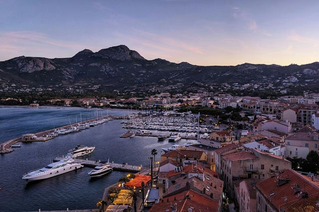

La Corse, l’île de Beauté entre citadelles et eaux turquoise
Des citadelles génoises au bord de l’eau, des falaises blanches, des plages de sable fin et des îles sauvages : la Corse se découvre ville par ville.
Photo : Maksim Shutov / Unsplash
La Corse se divise en deux départements : la Corse-du-Sud, autour d’Ajaccio, et la Haute-Corse, autour de Bastia. On y arrive en avion, par les aéroports d’Ajaccio, Bastia, Calvi et Figari, ou en ferry depuis Marseille, Toulon, Nice et l’Italie.
Les distances paraissent courtes sur la carte, mais les routes sont sinueuses : comptez large entre deux villes. Chaque guide vous dit quoi voir, comment y aller et quoi réserver.
Que voir en Corse
-
 Ajaccio
AjaccioLa ville natale de Napoléon, sa vieille ville et les îles Sanguinaires.
-
 Bastia
BastiaLe vieux port, la citadelle génoise et la porte du Cap Corse.
-
 Bonifacio
BonifacioLa haute ville au bord des falaises blanches, face à la Sardaigne.
-
 Porto-Vecchio
Porto-VecchioLa citadelle génoise, Palombaggia et Santa Giulia.
-
 Les îles Lavezzi
Les îles LavezziL’archipel sauvage au large de Bonifacio, ses criques et ses rochers de granit.
-

CalviLa citadelle génoise, sa baie et la plage de la Pinède.
-
 Piana et ses calanques
Piana et ses calanquesLes falaises de granit rouge classées à l’Unesco, au-dessus du golfe de Porto.